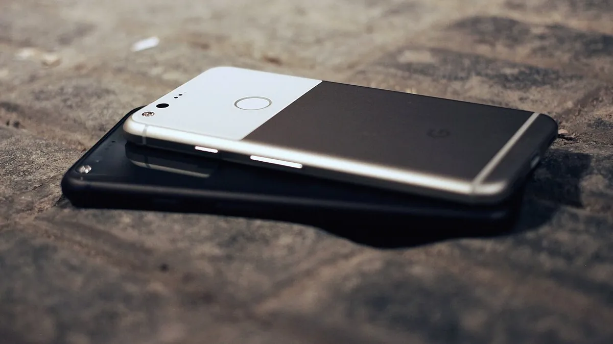

Google 相簿永久免費、無限備份！一支舊 Pixel 就搞定的「無限相簿」攻略
手機又跳出「Google 帳戶儲存空間已滿」？每個月乖乖付 Google One 之前，先看這篇：一支 Pixel 5 以前的舊手機，就能讓你的相片永久免費、無限量備份到 Google 相簿。 不是破解，是 Google 說明頁上白紙黑字寫的。
台灣 PTT 上的老手叫它「無限相簿」，有人特地留一支舊 Pixel 專門負責上傳，叫「上傳機」。每個 Google 帳戶只有 15 GB，由 Gmail、Google 雲端硬碟和 Google 相簿共用，相片一多很快就滿。這篇從零教你：它是什麼、為什麼可行、要準備什麼、怎麼搭配主力機用，以及動手前要注意的事。
先看空間滿了會怎樣
依 Google One 說明「Google 儲存空間的使用方式」，用量超出配額之後：
- 無法再把任何相片和影片備份到 Google 相簿。
- Gmail 收發信件可能會受到影響。
- 雲端硬碟的檔案只能下載、刪除，不能做其他操作。
- 超出配額達 2 年以上，帳戶裡的內容（包括 Gmail、Google 相簿、雲端硬碟）可能會被移除。
所以空間滿了不只是「相片傳不上去」而已。要嘛付錢買空間，要嘛想辦法讓相片不占空間，無限相簿屬於後者。
無限相簿是什麼
不是漏洞，也不是破解。Google 相簿說明「關於 Google 相簿活動和儲存空間」裡有這一句：
重點有兩個。第一，是「從裝置備份」：相片要放在那支 Pixel 上，由那支 Pixel 的 Google 相簿 App 備份上去；用電腦網頁或別支手機上傳的，照一般規則計入儲存空間。第二，Google 說明頁目前沒有寫結束日期，不過 Google 隨時可以修改條件。

Maurizio Pesce from Milan, Italia, CC BY 2.0, Wikimedia Commons
哪些 Pixel 可以，畫質差在哪
| 機型 | 免費無限備份的畫質 |
|---|---|
| Pixel（第 1 代） | 原始畫質 |
| Pixel 2、3、3a、4、4a、5 | 壓縮畫質（英文介面叫 Storage saver） |
| Pixel 5a、Pixel 6 及之後 | 沒有 |
Pixel 2 和 Pixel 3 分別在 2021 年 1 月 16 日、2022 年 1 月 31 日之後才變成「壓縮畫質免費」，每一代的完整條件、期限，以及買二手 Pixel 前要檢查什麼，整理在Pixel 無限相簿機型總整理。來源是 Google 相簿說明「選擇相片和影片的備份畫質」的「Android 手機和平板電腦」分頁。
「壓縮畫質」要先搞懂：超過 1,600 萬像素的相片會縮成 1,600 萬像素，高於 1080p 的影片會降成 1080p。PTT 上有人覺得在手機上看差異不大，但 4K 影片、要大圖輸出或後製的原檔就會差很多。原始畫質免費的只有第一代 Pixel。 Pixel 2 到 5 如果把畫質設成原始畫質，就會照常計入儲存空間。
所以比較穩的想法是：無限相簿是「雲端上一份看得到、找得到的副本」，原檔仍然要自己另外留一份（電腦、外接硬碟或 NAS）。
要準備什麼
- 一支 Pixel 5 或更早的 Pixel。 二手也可以。買之前確認型號（設定 →「關於手機」），名字只差一個字的 Pixel 5a 不在名單裡。
- 用你自己的 Google 帳戶登入那支 Pixel。 從 Pixel 備份上去的相片，會出現在同一個帳戶的 Google 相簿裡，主力機、電腦都看得到。
- 在 Pixel 的 Google 相簿開啟備份。 路徑：右上角大頭貼 →「Google 相簿設定」→「備份」。Pixel 2 到 5 請把「相片和影片畫質」設成「壓縮畫質」。
- 把相片放進相機資料夾
DCIM/Camera。 開啟備份後，相機拍的相片會自動備份；放在其他資料夾的，要到「備份裝置資料夾」另外打開那個資料夾（Google 說明）。 - 網路和電源。 舊手機長時間邊充電邊上傳會發熱，放在通風的地方。
Donald Trung Quoc Don, CC BY-SA 4.0, Wikimedia Commons
不是 Pixel 拍的相片，也算免費嗎？
這是大家最想知道、Google 卻沒有寫清楚的一點。說明頁的用字是「從裝置備份」，沒有明寫「一定要用這支 Pixel 拍」，也沒有明寫「別支手機拍的也算」。PTT 上有不少人把別支手機拍的相片傳到 Pixel 再備份，但那是個人經驗，不是 Google 的說法。
所以請這樣做：先放一小批（幾十張）別支手機拍的相片到 Pixel，等備份完成，再到 Google One 的儲存空間頁面看用量有沒有增加。 沒有增加，再慢慢放大量；有增加，就停下來。
大家怎麼搭配主力機用
Pixel 通常不是你每天拍照的那支手機，所以重點變成「怎麼把主力機的相片送進 Pixel」。常見的有三種做法：
- 同步 App 自動傳。 PTT 和部落格上有人用 Syncthing、Resilio Sync 這類工具，讓主力機拍完的相片自動傳到 Pixel 的
DCIM資料夾。優點是設定好之後幾乎不用管；缺點是兩支手機都要開著、連上網路，各工具的設定方式不同，請照該工具的說明做。 - 定期用電腦搬。 主力機的相片先存到電腦，再用 USB 線複製到 Pixel 的
DCIM/Camera。不用裝任何 App，原檔也順便留在電腦上，但每次都要手動。iPhone 使用者也可以走這條路。 - 經過雲端中轉。 主力機先把相片備份到另一個雲端（例如 OneDrive），再從雲端下載到 Pixel。適合本來就有用其他雲端的人，搬完記得回雲端刪掉，不然那邊的空間一樣會滿。
還有一件容易忽略的事：主力機上的 Google 相簿如果也用同一個帳戶開著備份，主力機傳上去的那份會照常計入空間。 讓 Pixel 負責上傳，主力機的 Google 相簿備份要關掉或改用別的帳戶，不然等於白做。
Pixel 的容量通常不大，滿了就用 Google 相簿的「釋出這部裝置的空間」，把已經備份的相片從 Pixel 清掉，再放下一批。
ShadowRobotnikULF, CC BY-SA 4.0, Wikimedia Commons
動手前要注意的事
- 已經在帳戶裡的相片不會因此變成免費。 Google 沒有說原本已計入的相片會改成不計入。無限相簿影響的是之後從 Pixel 備份的內容。
- 帳戶已經超出配額的話，先把用量降下來。 Google 的說明寫著，超出配額時「無法將任何相片和影片備份到 Google 相簿」，沒有寫 Pixel 例外。先清掉 Gmail 大附件或雲端硬碟裡的檔案，回到上限以下再開始，一樣先小量測試。
- 長期不用會被刪。 Google 寫明，超過 2 年沒有使用 Google 相簿，或超出儲存空間上限，相片和影片可能會遭到刪除。
- 舊手機本身。 舊 Pixel 的電池可能已經老化，背蓋鼓起就停止使用。更多舊機的注意事項寫在這篇的常見問題。
- 畫質。 再說一次：除了第一代，雲端上留下的是壓縮畫質，原檔要自己保存。
相片在 OneDrive 的話
如果你的舊相片不在主力機，而是堆在 OneDrive（例如三星手機以前開過 OneDrive 同步），我們開發團隊做了一個 Android App DriveSync，可以直接在 Pixel 上把 OneDrive 的相片和影片搬進 DCIM/Camera，確認檔案完整後才刪除 OneDrive 上的原檔。它是獨立開發的 App，和 Google、Microsoft 沒有關聯；免費版單一檔案上限 100 MB。完整流程，包括最後要清空 OneDrive 資源回收筒才會真的釋出空間，請看舊 Pixel 無限相簿教學。